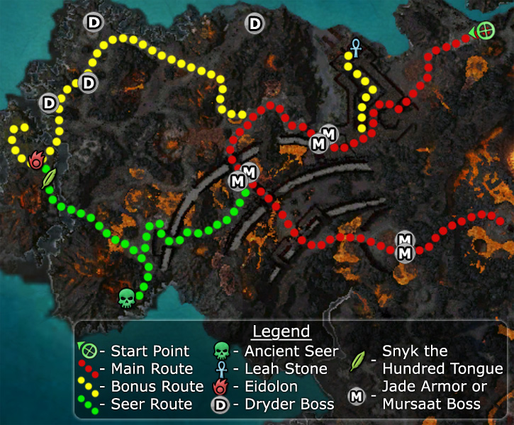

Elite: Barrage
M24
Abaddon's Mouth
◉ Mission Map

Click to enlarge · Local cache · Wiki
Summary (click to expand)
The Door of Komalie is nearby. Push your way through the Mursaat and break the seals to open it.
Region: Ring of Fire Islands · Mission: 24 of 25 · Type: Cooperative
✓ Objectives
Open the Door of Komalie.
- Disable the seals to power down the Onyx Gate.
- Climb the path into Abaddon's Mouth.
- Break the magical seals holding closed the Door of Komalie.
- *BONUS* Escort the spirit of Leah Stone to its final resting place.
→ Walkthrough
This mission requires you to break through a Mursaat fortress by powering down the Onyx Gate to finally reach the Door of Komalie. Vizier Khilbron will periodically enchant the party with Chimera of Intensity, but this only lasts two minutes so is little help overall. The complex includes many gates that prevent access to the fortress; destroy each gate's Ether Seal to open them. Some of the gates are close to nearby groups of foes and guarded by Jade Bows; it is unwise to fight them together. You can spike the seal first or pull the jade away from it.
You will start outside the Mursaat fortress; the vizier will enchant you when you get close to the main entrance. Before targeting the first Ether Seal, dispatch the side guards on top of the wall. All the Mursaat troops are stationed close to each other, so pull them apart to avoid over-aggro. Destroy the Ether Seals on either side of the Onyx Gate to open it. Leave through the Onyx Gate to continue with the mission.
Intermediately after leaving the Onyx Gate, the Vizier will re-enchant the party. You have to destroy three more gates; the two pairs of bosses between them can be easily defeated, if you keep them away from the seals.
After entering the caldera, Khilbron will aid you for a third and last time. Players arrive to a platform with six seals that lock the Door of Komalie and must be destroyed.
Each time you destroy a singular seal, four level-10 (lvl 20 in Hard Mode) Seal Guards will spawn while Mursaat Guardians will join the battle from the north and south. Clear the area of the current crop of foes before destroying another seal, otherwise you will get overwhelmed. As with other similar missions, patience is the key to success.
After the last seal is destroyed, a cinematic will trigger, then a Burning Titan will spawn at the center of the bloodstone. Defeat it to complete the mission.
★ Bonus
Your goal is to escort the spirit of Leah Stone from the fortress to a small island in the west. She only appears once the Ether Seal at the docks near her spawn point is defeated. The main difficulty is that this NPC is fragile and can be easily killed. She stops moving if you move out of compass range; and she slows down once she leaves the fortress. Finally, she is affected by burning from the lava, requiring you to stop frequently and wait for her to regenerate her health.
In hard mode, your best bet is to clear the path of foes before releasing her spirit; she takes the largest coast road bordering the island from north to west. Be sure to trigger any pop-ups in the area past the Eidolon and remove the dryders, Crag Behemoths, wurms and possibly Snyk the Hundred Tongue, any of which can kill her. Once you have removed these threats, return to the fortress, kill the nearby boss, and then lead her back towards the island. Note that if you clear the path first, then free her, that she will stop after the lava if unescorted (no players in compass range).
In normal mode, if you are confident of your team's strength, you can trigger her appearance earlier, which will save you from retracing your steps.
◆ Hard Mode
No dedicated Hard Mode section on the wiki — expect tougher foes and adjusted mechanics. See walkthrough notes.
☠ Bosses & Elites
Elite: Restore Condition
Elite: Soul Leech
Elite: Fevered Dreams
Elite: Mist Form
Elite: Devastating Hammer
Elite: Oath Shot
Elite: Aura of Faith
Elite: Life Transfer
Elite: Energy Surge
Elite: Thunderclap
✦ Tips & Notes
Skill recommendations
- Area damage over time skills to kill the Ether Seals since they cannot flee.
- Damage reduction, e.g. Protective Spirit, to negate some of the Ether Seal's spike.
- Interrupts and Daze are useful against the hydras and some of the bosses.
- Party-wide speed boosts help reduce the time spent backtracking during the bonus.
Notes
- Sometimes, chests spawn in Leah Stone's scripted path, making the bonus impossible. Checking her route before attempting bonus might therefore save a lot of time.
- Occasionally, if you kill the Burning Titan at the end too quickly, the mission will fail. Give it a couple of seconds after the last cut scene.
- The Ancient Seer stands on the south western coast of the island. Give him the Eidolon's Spectral Essence to infuse your armor together with any other player who talks to him. This is a good opportunity to infuse a second set of armor.
- Some of the elite skills found in this mission cannot be captured anywhere else. If attempting the bonus, it may be wise to bring a Signet of Capture.
- The Jade and Mursaat bosses share 3 spawn points. 2 of the six bosses will spawn at each point.
- The Dryder bosses share 4 spawn points.
- Complete exploration of this mission adds about 1.3% to the Tyrian Explorer title.
- Completion of this mission will fill in page #17 of The Flameseeker Prophecies storybook.
- After completing this mission, your party will be taken to Hell's Precipice.